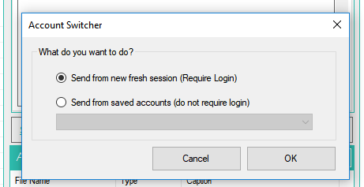

WHATSENDER est un logiciel gratuit conçu pour envoyer des messages WhatsApp en vrac directement à partir du PC d’une manière simple et efficace.
WhatSender utilise la technologie Web WhatsApp, mais ajoute des fonctionnalités utiles pour faire WhatsApp marketing et envoyer des messages WhatsApp à plusieurs utilisateurs en même temps. Voici les raisons pour lesquelles vous devriez utiliser Whatsender pour contacter tous vos amis/parents ou clients potentiels pour faire du marketing WhatsApp à un niveau professionnel:
- Créer et envoyer des messages personnalisés (avec le nom du destinataire ou d’autres «variables») directement à partir de votre PC
- Importer des contacts séparément ou à partir d’un fichier (CSV ou TXT)
- Envoyer des messages WhatsApp à des contacts même s’ils ne sont pas enregistrés dans votre carnet d’adresses
- Créer automatiquement plusieurs variantes du message à envoyer à tous les contacts et éviter le spam ou l’interdiction
- Multi-Account: envoyez des messages WhatsApp avec plusieurs comptes (les messages seront envoyés en « rotation »)
- Possibilité de voir le rapport de la campagne (à partir de la section LOG)
- Possibilité de programmer l’envoi et de mettre un délai entre les messages pour éviter d’être banni (lire aussi ces conseils)
- Prenez tous les membres d’un groupe WhatsApp pour les contacter via WhatSender
- Créer et envoyer des messages WhatsApp avec des photos et des vidéos virales
- Vérification en vrac des numéros de téléphone WhatsApp et non-WhatsApp (fonction de filtrage des nombres)
Téléchargez et installez la version gratuite de WhatSender à partir du lien suivant:

Remarque: la version gratuite de WhatSender vous permet d’envoyer des messages illimités. La seule limitation est l’impossibilité d’importer des contacts à partir de fichiers ou de les copier et les coller en mode batch.
Cet outil vous permet de communiquer avec les destinataires qui s’attendent à recevoir vos messages (par exemple, Cliients, étudiants, patients, etc.), et ce n’est pas un outil de spam, donc nous ne sommes pas responsables si vous avez été banni
Immédiatement après l’installation, vous verrez l’écran principal suivant:

Sélectionnez la langue souhaitée (arabe, anglais, Espanola, francais, porugues, italien) en cliquant sur le menu Tools puis sur Language, comme illustré dans l’image ci-dessous:

guide
COMMENT ENVOYER DES MESSAGES WHATSAPP EN VRAC DEPUIS UN PC
ÉTAPE 1. Importez ou ajoutez vos contacts
Cliquez en haut à gauche sur IMPORT pour importer tous vos contacts (destinataires du message que vous souhaitez envoyer). Vous avez deux façons d’ajouter vos contacts (importation à partir d’un fichier ou d’une importation manuelle)

Si vous cliquez sur « importer à partir du fichier », il ouvrira une nouvelle fenêtre où vous pouvez sélectionner et importer des contacts à partir du fichier CSV ou TXT. Dans ces fichiers, vous pouvez avoir une colonne avec le numéro de téléphone ou deux colonnes avec le nom et le numéro (par exemple. Nom, numéro). Vous pouvez également avoir plus de levage avec le nom, le nombre et d’autres variables.

Si vous importez des contacts avec le nom, les nombres et les variables, vous serez en mesure de créer des messages personnalisés avec des «parties du message» prises automatiquement à partir du fichier importé.
Si vous voulez importer un fichier avec plusieurs variables, il s’agit d’un exemple du format du fichier txt ou CSV à utiliser:

Comme vous pouvez le voir, tous les champs doivent être séparés par « ; »
Si vous cliquez sur importation manuelle, il ouvrira une fenêtre où vous pouvez ajouter manuellement vos contacts et entrer le nom et le numéro de téléphone mobile (ou les numéros mobiles seulement).

Note: dans la version gratuite, vous serez autorisé à importer des contacts manuellement uniquement et l’option « copier et coller » est désactivée. Avec l’importation manuel vous n’êtes pas autorisé à ajouter plusieurs variables (vous pouvez ajouter le nom et les nombres, ou les nombres seulement).
Une fois que vous ajoutez des contacts, cliquez sur IMPORT.
ÉTAPE 2. Créer le message à envoyer
Maintenant, vous pouvez commencer à taper le message à envoyer à vos contacts (à partir de la section centrale du programme).

Vous serez en mesure de créer également différentes « variantes » du message afin que vos contacts ne reçoivent pas le même texte (cela évite le spam et évite d’être banni sur WhatsApp). Il suffit de cliquer sur le bouton « ajouter un message » pour créer une nouvelle version pour le message.

Au-dessus de la fenêtre de message il y a un lien pour ajouter des Emoji et il y a des liens pour ajouter automatiquement le nom et d’autres «variables» sur le message.

Il y a aussi un lien « SpinTax« : il vous permettra de définir un tableau de mots avec la même signification ou des synonymes (par exemple Bonjour, Salut, Hey) et lorsque vous envoyez le message, le programme les utilisera au hasard. De cette façon, vous enverrez automatiquement différents messages et vous réduirez le risque de «bannir».

Vous pouvez également sélectionner un fichier à joindre (photo, images, documents ou fichier vidéo) et l’envoyer avec le message.

ÉTAPE 3. Envoyer le message
Lorsque tous les contacts sont chargés et que le message est prêt, cliquez simplement sur le bouton Envoyer ci-dessous.

Après avoir cliqué sur le bouton envoyer, il ouvrira cette fenêtre:

Vous pouvez envoyer à partir d’une nouvelle session fraîche (après la connexion), envoyer à partir d’un compte WhatsApp enregistré (ne nécessitent pas de connexion), ou envoyer des messages en rotation en utilisant tous les comptes WhatsApp stockés dans le programme.
Vous pouvez ajouter plusieurs compte WhatsApp en cliquant sur ACCOUNT (dans la barre de menu supérieure)
Après avoir choisi le compte et le mode d’envoi, WhatSender ouvrira automatiquement web.whatsapp.com sur Google Chrome et vous verrez un code QR. Scannez ce code QR avec le scanneur dans WhatsApp. Pour ce faire, ouvrez WhatsApp sur votre téléphone et:
> Sur Android: dans l’écran chats > menu > WhatsApp Web.
> Sur iPhone: allez dans les paramètres > WhatsApp Web.
> Sur Windows Phone: allez dans le menu > WhatsApp Web
Ainsi, scannez le QR code sur votre écran d’ordinateur à partir de votre téléphone. Peu de temps après, le message WhatsApp sera envoyé à tous les destinataires!
Autres fonctions/paramètres
WhatSender a une interface utilisateur très simple et intuitive où tous les outils sont à portée de main:

En plus des fonctions de base déjà analysées telles que l’importation de contacts et la création d’un message personnalisé, il existe d’autres fonctionnalités avancées intéressantes et les paramètres dans le programme.
GÉNÉRER des nombres: Si vous cliquez sur importations–> générer des nombres, vous serez en mesure de créer des numéros mobiles pour essayer d’atteindre. Vous devrez définir un « numéro de départ » et un « compte »: le programme générera tous les nombres comme vous pouvez le voir à partir de l’image ci-dessous.

CONTACT GRABBER: cette fonction vous permettra de saisir tous les contacts d’un groupe de WhatsApp sélectionné. Il suffit d’ouvrir WhatsApp, scanner le code QR à partir de votre téléphone, sélectionnez le groupe et WhatSender va extraire tous les contacts. Tous les contacts seront répertoriés sur la fenêtre « contact grabber » comme vous pouvez le voir à partir de l’image ci-dessous.

PARAMÈTRES: Si vous cliquez sur « paramètres avancés d’envoi » sur le bouton « paramètres », il ouvrira une fenêtre où vous trouverez l’option d’envoi avancé qui initie la boîte de dialogue après « x » quantité de messages pour éviter le blocage. Il vous suffit de définir vos comptes WhatsApp familiers et un dictionnaire de messages (message aléatoire qui sera envoyé à vos comptes familiers).

NUMBERS FILTER: cette fonctionnalité vous permettra de savoir, compte tenu d’une liste de numéros de téléphone, ceux qui sont associés à un compte WhatsApp et ceux qui ne sont pas WhatsApp. Une fois que la fonction est ouverte, vous devez charger tous les numéros de téléphone (ou utiliser la fonction de génération de numéros), puis cliquez sur Démarrer le filtrage

Le logiciel vérifiera tous les numéros pour savoir qui sont « WhatsApp » et « NonWhatsapp » comptes.
TUTORIEL VIDÉO
#4. Autres conseils
Si vous utilisez WhatSender pour envoyer un grand nombre de messages et que vous voulez protéger votre compte WhatsApp, nous donnons les conseils suivants:
7. Utilisez la fonction SpinTax pour définir un tableau de mots avec la même signification (le programme les utilisera au hasard)